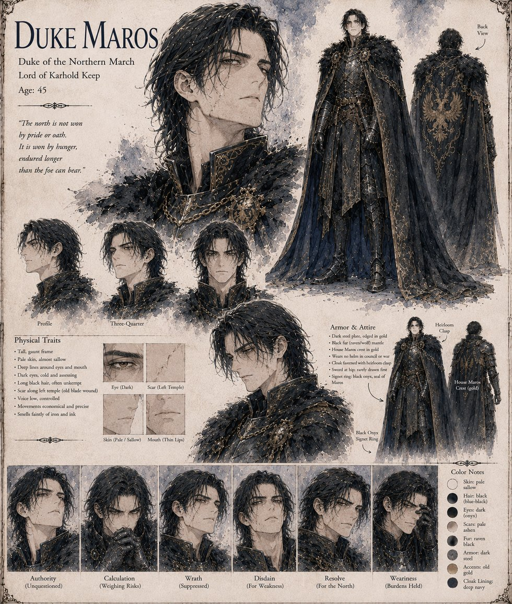

Duke Maros
Duke of the Northern March · Lord of Karhold Keep · 45 years old
Duke of the Northern March, and the man whose wounded pride sends a royal hunt into the cold. Humiliated at his own table when Duke Vane presents him with a summer-killed stag's head, he proposes a hunt in the deep northern winter to answer it — and it costs him every toe on both feet by the fourth week at the Broken Glacier. After the flask kills Kaelen he buys Vane's help on terms no one in his position could afford. His last honest act is a letter to the King warning him of Vane and begging that his wife and four-year-old son be kept out of Vane's reach; Vane's men take it from the courier at the pickets and burn it. Maros is arrested for treason and dies on the road south, in what Vane's own report calls an escape attempt met with necessary force.
“The north is not won by pride or oath. It is won by hunger, endured longer than the foe can bear.”
Appears in The Thermal Vessel War